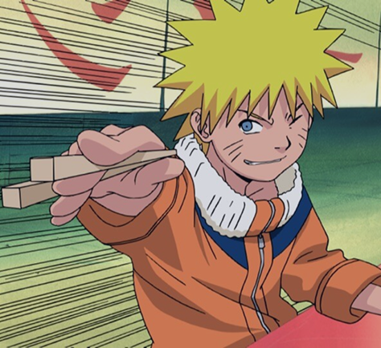
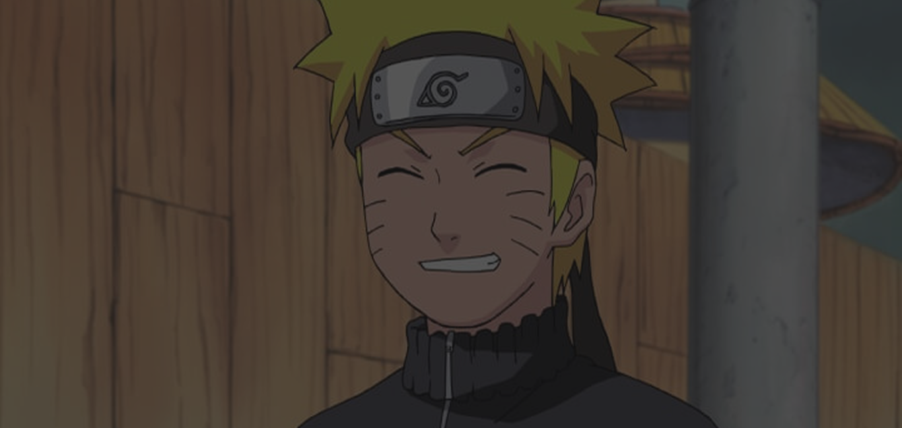

Fase 01
Infância em Konoha
Na infância em Konoha, Naruto busca reconhecimento e sonha em se tornar Hokage.
BEM-VINDO AO MUNDO SHINOBI
Explore a história de Naruto, suas aldeias e seus clãs. Conheça o SysKage, projeto da SPTech para organizar dados e acompanhar equipes do mundo ninja.

A jornada
Três fases que moldaram o shinobi mais improvável de Konoha.
Fase 01
Na infância em Konoha, Naruto busca reconhecimento e sonha em se tornar Hokage.

Fase 02
Ao lado de Sasuke, Sakura e Kakashi, Naruto aprende que a força real vem dos laços entre companheiros e do trabalho em equipe.
Fase 03
Após anos de treinamento intenso, Naruto retorna mais forte, determinado a proteger seus amigos e continuar evoluindo como shinobi.
O mundo shinobi
Cinco nações, cinco aldeias, cinco forças que moldam o equilíbrio do mundo.
A aldeia de Naruto e dos Hokages, ligada à Vontade do Fogo e à cooperação entre seus clãs.
País do Vento
Aldeia do deserto, no País do Vento, com tradição em técnicas de vento e marionetes.
País da Água
Aldeia do País da Água, conhecida pela névoa e por sua tradição de espadachins.
País do Relâmpago
A Aldeia Oculta das Nuvens, no País do Relâmpago. Berço de shinobi de natureza raio e de poderosos Raikages.
País da Terra
A Aldeia Oculta das Pedras, no País da Terra. Conhecida por sua resistência e pelos shinobi de natureza terra.